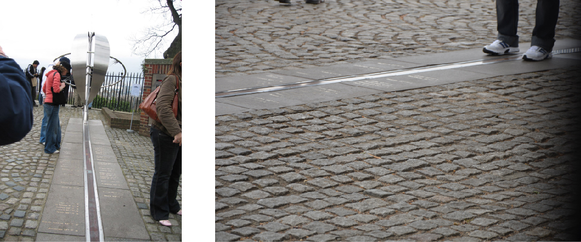

4.1 Earth and Sky
Learning Objectives
By the end of this section, you will be able to:
- Describe how latitude and longitude are used to map Earth
- Explain how right ascension and declination are used to map the sky
In order to create an accurate map, a mapmaker needs a way to uniquely and simply identify the location of all the major features on the map, such as cities or natural landmarks. Similarly, astronomical mapmakers need a way to uniquely and simply identify the location of stars, galaxies, and other celestial objects. On Earth maps, we divide the surface of Earth into a grid, and each location on that grid can easily be found using its latitude and longitude coordinate. Astronomers have a similar system for objects on the sky. Learning about these can help us understand the apparent motion of objects in the sky from various places on Earth.
Locating Places on Earth
Let’s begin by fixing our position on the surface of planet Earth. As we discussed in Observing the Sky: The Birth of Astronomy, Earth’s axis of rotation defines the locations of its North and South Poles and of its equator, halfway between. Two other directions are also defined by Earth’s motions: east is the direction toward which Earth rotates, and west is its opposite. At almost any point on Earth, the four directions—north, south, east, and west—are well defined, despite the fact that our planet is round rather than flat. The only exceptions are exactly at the North and South Poles, where the directions east and west are ambiguous (because points exactly at the poles do not turn).
We can use these ideas to define a system of coordinates attached to our planet. Such a system, like the layout of streets and avenues in Manhattan or Salt Lake City, helps us find where we are or want to go. Coordinates on a sphere, however, are a little more complicated than those on a flat surface. We must define circles on the sphere that play the same role as the rectangular grid that you see on city maps.
A great circle is any circle on the surface of a sphere whose center is at the center of the sphere. For example, Earth’s equator is a great circle on Earth’s surface, halfway between the North and South Poles. We can also imagine a series of great circles that pass through both the North and South Poles. Each of the circles is called a meridian; they are each perpendicular to the equator, crossing it at right angles.
Any point on the surface of Earth will have a meridian passing through it (Figure 4.2). The meridian specifies the east-west location, or longitude, of the place. By international agreement (and it took many meetings for the world’s countries to agree), longitude is defined as the number of degrees of arc along the equator between your meridian and the one passing through Greenwich, England, which has been designated as the Prime Meridian. The longitude of the Prime Meridian is defined as 0°.
![On this illustration of the Earth, roughly centered on the North Atlantic, lines of latitude and longitude are drawn in white. The lines of longitude are parallel with the equator, which is indicated with an arrow at lower right. The “Prime Meridian of longitude” is indicated with an arrow at upper right. A grey arrow, labeled “Latitude”, is drawn northward from the equator in South America to intersect with a grey arrow, labeled “Longitude”, that is drawn westward from the prime meridian. At the intersection of these arrows, “Washington D.C.” is labeled.](../img/OSC_Astro_04_01_Washington.jpg)
Figure 4.2. We use latitude and longitude to find cities like Washington, DC, on a globe. Latitude is the number of degrees north or south of the equator, and longitude is the number of degrees east or west of the Prime Meridian. Washington, DC’s coordinates are 38° N and 77° W.
Why Greenwich, you might ask? Every country wanted 0° longitude to pass through its own capital. Greenwich, the site of the old Royal Observatory (Figure 4.3), was selected because it was between continental Europe and the United States, and because it was the site for much of the development of the method to measure longitude at sea. Longitudes are measured either to the east or to the west of the Greenwich meridian from 0° to 180°. As an example, the longitude of the clock-house benchmark of the U.S. Naval Observatory in Washington, DC, is 77.066° W.

Figure 4.3. At the internationally agreed-upon zero point of longitude at the Royal Observatory Greenwich, tourists can stand and straddle the exact line where longitude “begins.”(credit left: modification of work by “pdbreen”/Flickr; credit right: modification of work by Ben Sutherland)
Your latitude (or north-south location) is the number of degrees of arc you are away from the equator along your meridian. Latitudes are measured either north or south of the equator from 0° to 90°. (The latitude of the equator is 0°.) As an example, the latitude of the previously mentioned Naval Observatory benchmark is 38.921° N. The latitude of the South Pole is 90° S, and the latitude of the North Pole is 90° N.
Locating Places in the Sky
Positions in the sky are measured in a way that is very similar to the way we measure positions on the surface of Earth. Instead of latitude and longitude, however, astronomers use coordinates called declination and right ascension. To denote positions of objects in the sky, it is often convenient to make use of the fictitious celestial sphere. We saw in Observing the Sky: The Birth of Astronomy that the sky appears to rotate about points above the North and South Poles of Earth—points in the sky called the north celestial pole and the south celestial pole. Halfway between the celestial poles, and thus 90° from each pole, is the celestial equator, a great circle on the celestial sphere that is in the same plane as Earth’s equator. We can use these markers in the sky to set up a system of celestial coordinates.
Declination on the celestial sphere is measured the same way that latitude is measured on the sphere of Earth: from the celestial equator toward the north (positive) or south (negative). So Polaris, the star near the north celestial pole, has a declination of almost +90°.
Right ascension (RA) is like longitude, except that instead of Greenwich, the arbitrarily chosen point where we start counting is the vernal equinox, a point in the sky where the ecliptic (the Sun’s path) crosses the celestial equator. RA can be expressed either in units of angle (degrees) or in units of time. This is because the celestial sphere appears to turn around Earth once a day as our planet turns on its axis. Thus the 360° of RA that it takes to go once around the celestial sphere can just as well be set equal to 24 hours. Then each 15° of arc is equal to 1 hour of time. For example, the approximate celestial coordinates of the bright star Capella are RA 5h = 75° and declination + 50°.
One way to visualize these circles in the sky is to imagine Earth as a transparent sphere with the terrestrial coordinates (latitude and longitude) painted on it with dark paint. Imagine the celestial sphere around us as a giant ball, painted white on the inside. Then imagine yourself at the center of Earth, with a bright light bulb in the middle, looking out through its transparent surface to the sky. The terrestrial poles, equator, and meridians will be projected as dark shadows on the celestial sphere, giving us the system of coordinates in the sky.
The Turning Earth
Why do many stars rise and set each night? Why, in other words, does the night sky seem to turn? We have seen that the apparent rotation of the celestial sphere could be accounted for either by a daily rotation of the sky around a stationary Earth or by the rotation of Earth itself. Since the seventeenth century, it has been generally accepted that it is Earth that turns, but not until the nineteenth century did the French physicist Jean Foucault provide an unambiguous demonstration of this rotation. In 1851, he suspended a 60-meter pendulum with a mass of about 25 kilograms from the dome of the Pantheon in Paris and started the pendulum swinging evenly. If Earth had not been turning, there would have been no alteration of the pendulum’s plane of oscillation, and so it would have continued tracing the same path. Yet after a few minutes Foucault could see that the pendulum’s plane of motion was turning. Foucault explained that it was not the pendulum that was shifting, but rather Earth that was turning beneath it (Figure 4.4). You can now find such pendulums in many science centers and planetariums around the world.
Figure 4.4. As Earth turns, the plane of oscillation of the Foucault pendulum shifts gradually so that as time passes, more and more of the targets in the circle at the edge of the wooden platform are knocked over in sequence. (credit: Manuel M. Vicente)
Can you think of other pieces of evidence that indicate that it is Earth and not the sky that is turning? (See Collaborative Group Activity A at the end of this chapter.)
Key Concepts and Summary
The terrestrial system of latitude and longitude makes use of the great circles called meridians. Longitude is arbitrarily set to 0° at the Royal Observatory at Greenwich, England. An analogous celestial coordinate system is called right ascension (RA) and declination, with 0° of declination starting at the vernal equinox. These coordinate systems help us locate any object on the celestial sphere. The Foucault pendulum is a way to demonstrate that Earth is turning.
Key terms
- declination: the angular distance north or south of the celestial equator
- great circle: a circle on the surface of a sphere that is the curve of intersection of the sphere with a plane passing through its center
- meridian: a great circle on the terrestrial or celestial sphere that passes through the poles
- right ascension: the coordinate for measuring the east-west positions of celestial bodies; the angle measured eastward along the celestial equator from the vernal equinox to the hour circle passing through a body
Source: Andrew Fraknoi, David Morrison, Sidney C. Wolff Astronomy 2e, OpenStax, 2022. Licensed under CC BY-NC-SA 4.0. Converted to Markdown; text unchanged, interactive embeds omitted.